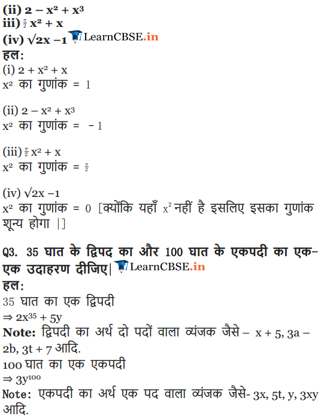

NCERT Solutions for Class 9 Maths Chapter 2 Polynomials Ex 2.1 are part of NCERT Solutions for Class 9 Maths. Here we have given NCERT Solutions for Class 9 Maths Chapter 2 Polynomials Ex 2.1.
- Polynomials
- Introduction
- Polynomials In One Variable
- Zeroes Of A Polynomial
- Remainder Theorem
- Factorisation Of Polynomials
- Algebraic Identities
- Summary
NCERT Solutions for Class 9 Maths Chapter 2 Polynomials Ex 2.1
Ex 2.1 Class 9 Maths Question 1.
Which of the following expressions are polynomials in one variable and which are not? State reasons for your answer.
(i) 4x2 – 3x + 7
(ii) y2 + √2
(iii) 3 √t + t√2
(iv) y+ \(\frac { 2 }{ y }\)
(v) x10+ y3+t50
Solution:
(i) We have 4x2 – 3x + 7 = 4x2 – 3x + 7x0
It is a polynomial in one variable i.e., x
because each exponent of x is a whole number.
(ii) We have y2 + √2 = y2 + √2y0
It is a polynomial in one variable i.e., y
because each exponent of y is a whole number.
(iii) We have 3 √t + t√2 = 3 √t1/2 + √2.t
It is not a polynomial, because one of the exponents of t is \(\frac { 1 }{ 2 }\),
which is not a whole number.
(iv) We have y + \(y+\frac { 2 }{ y }\) = y + 2.y-1
It is not a polynomial, because one of the exponents of y is -1,
which is not a whole number.
(v) We have x10+ y3 + t50
Here, exponent of every variable is a whole number, but x10 + y3 + t50 is a polynomial in x, y and t, i.e., in three variables.
So, it is not a polynomial in one variable.
Ex 2.1 Class 9 Maths Question 2.
Write the coefficients of x2 in each of the following
(i) 2 + x2 + x
(ii) 2 – x2 + x3
(iii) \(\frac { \pi }{ 2 }\) x2 + x
(iv) √2 x – 1
Solution:
(i) The given polynomial is 2 + x2 + x.
The coefficient of x2 is 1.
(ii) The given polynomial is 2 – x2 + x3.
The coefficient of x2 is -1.
(iii) The given polynomial is \(\frac { \pi }{ 2 } { x }^{ 2 }\) + x.
The coefficient of x2 is \(\frac { \pi }{ 2 }\).
(iv) The given polynomial is √2 x – 1.
The coefficient of x2 is 0.
Ex 2.1 Class 9 Maths Question 3.
Give one example each of a binomial of degree 35, and of a monomial of degree 100.
Solution:
(i) Abmomial of degree 35 can be 3x35 -4.
(ii) A monomial of degree 100 can be √2y100.
Ex 2.1 Class 9 Maths Question 4.
Write the degree of each of the following polynomials.
(i) 5x3+4x2 + 7x
(ii) 4 – y2
(iii) 5t – √7
(iv) 3
Solution:
(i) The given polynomial is 5x3 + 4x2 + 7x.
The highest power of the variable x is 3.
So, the degree of the polynomial is 3.
(ii) The given polynomial is 4- y2. The highest
power of the variable y is 2.
So, the degree of the polynomial is 2.
(iii) The given polynomial is 5t – √7 . The highest power of variable t is 1. So, the degree of the polynomial is 1.
(iv) Since, 3 = 3x° [∵ x°=1]
So, the degree of the polynomial is 0.
Ex 2.1 Class 9 Maths Question 5.
Classify the following as linear, quadratic and cubic polynomials.
(i) x2+ x
(ii) x – x3
(iii) y + y2+4
(iv) 1 + x
(v) 3t
(vi) r2
(vii) 7x3
Solution:
(i) The degree of x2 + x is 2. So, it is a quadratic polynomial.
(ii) The degree of x – x3 is 3. So, it is a cubic polynomial.
(iii) The degree of y + y2 + 4 is 2. So, it is a quadratic polynomial.
(iv) The degree of 1 + x is 1. So, it is a linear polynomial.
(v) The degree of 3t is 1. So, it is a linear polynomial.
(vi) The degree of r2 is 2. So, it is a quadratic polynomial.
(vii) The degree of 7x3 is 3. So, it is a cubic polynomial.
NCERT Solutions for Class 9 Maths Chapter 2 Polynomials (बहुपद) (Hindi Medium) Ex 2.1


NCERT Solutions for Class 9 Maths Chapter 2 Polynomials Ex 2.2
Question 1.
Find the value of the polynomial 5x – 4x2 + 3 at
(i) x = 0
(ii) x = – 1
(iii) x = 2
Solution:
1et p(x) = 5x – 4x2 + 3
(i) p(0) = 5(0) – 4(0)2 + 3 = 0 – 0 + 3 = 3
Thus, the value of 5x – 4x2 + 3 at x = 0 is 3.
(ii) p(-1) = 5(-1) – 4(-1)2 + 3
= – 5x – 4x2 + 3 = -9 + 3 = -6
Thus, the value of 5x – 4x2 + 3 at x = -1 is -6.
(iii) p(2) = 5(2) – 4(2)2 + 3 = 10 – 4(4) + 3
= 10 – 16 + 3 = -3
Thus, the value of 5x – 4x2 + 3 at x = 2 is – 3.
Question 2.
Find p (0), p (1) and p (2) for each of the following polynomials.
(i) p(y) = y2 – y +1
(ii) p (t) = 2 +1 + 2t2 -t3
(iii) P (x) = x3
(iv) p (x) = (x-1) (x+1)
Solution:
(i) Given that p(y) = y2 – y + 1.
∴ P(0) = (0)2 – 0 + 1 = 0 – 0 + 1 = 1
p(1) = (1)2 – 1 + 1 = 1 – 1 + 1 = 1
p(2) = (2)2 – 2 + 1 = 4 – 2 + 1 = 3
(ii) Given that p(t) = 2 + t + 2t2 – t3
∴p(0) = 2 + 0 + 2(0)2 – (0)3
= 2 + 0 + 0 – 0=2
P(1) = 2 + 1 + 2(1)2 – (1)3
= 2 + 1 + 2 – 1 = 4
p( 2) = 2 + 2 + 2(2)2 – (2)3
= 2 + 2 + 8 – 8 = 4
(iii) Given that p(x) = x3
∴ p(0) = (0)3 = 0, p(1) = (1)3 = 1
p(2) = (2)3 = 8
(iv) Given that p(x) = (x – 1)(x + 1)
∴ p(0) = (0 – 1)(0 + 1) = (-1)(1) = -1
p(1) = (1 – 1)(1 +1) = (0)(2) = 0
P(2) = (2 – 1)(2 + 1) = (1)(3) = 3
Question 3.
Verify whether the following are zeroes of the polynomial, indicated against them.
(i) p(x) = 3x + 1,x = –\(\frac { 1 }{ 3 }\)
(ii) p (x) = 5x – π, x = \(\frac { 4 }{ 5 }\)
(iii) p (x) = x2 – 1, x = x – 1
(iv) p (x) = (x + 1) (x – 2), x = – 1,2
(v) p (x) = x2, x = 0
(vi) p (x) = 1x + m, x = – \(\frac { m }{ 1 }\)
(vii) P (x) = 3x2 – 1, x = – \(\frac { 1 }{ \sqrt { 3 } }\),\(\frac { 2 }{ \sqrt { 3 } }\)
(viii) p (x) = 2x + 1, x = \(\frac { 1 }{ 2 }\)
Solution:
(i) We have , p(x) = 3x + 1
(ii) We have, p(x) = 5x – π
∴ \(p(-\frac { 1 }{ 3 } )\quad =\quad 3(-\frac { 1 }{ 3 } )\quad +\quad 1\quad =\quad -1\quad +\quad 1\quad =\quad 0\)
(iii) We have, p(x) = x2 – 1
∴ p(1) = (1)2 – 1 = 1 – 1=0
Since, p(1) = 0, so x = 1 is a zero of x2 -1.
Also, p(-1) = (-1)2 -1 = 1 – 1 = 0
Since p(-1) = 0, so, x = -1, is also a zero of x2 – 1.
(iv) We have, p(x) = (x + 1)(x – 2)
∴ p(-1) = (-1 +1) (-1 – 2) = (0)(- 3) = 0
Since, p(-1) = 0, so, x = -1 is a zero of (x + 1)(x – 2).
Also, p( 2) = (2 + 1)(2 – 2) = (3)(0) = 0
Since, p(2) = 0, so, x = 2 is also a zero of (x + 1)(x – 2).
(v) We have, p(x) = x2
∴ p(o) = (0)2 = 0
Since, p(0) = 0, so, x = 0 is a zero of x2.
(vi) We have, p(x) = lx + m
(vii) We have, p(x) = 3x2 – 1
(viii) We have, p(x) = 2x + 1
∴ \(p(\frac { 1 }{ 2 } )\quad =\quad 2(\frac { 1 }{ 2 } )+1=\quad 1+1\quad =\quad 2\)
Since, \(p(\frac { 1 }{ 2 } )\) ≠ 0, so, x = \(\frac { 1 }{ 2 }\) is not a zero of 2x + 1.
Question 4.
Find the zero of the polynomial in each of the following cases
(i) p(x)=x+5
(ii) p (x) = x – 5
(iii) p (x) = 2x + 5
(iv) p (x) = 3x – 2
(v) p (x) = 3x
(vi) p (x)= ax, a≠0
(vii) p (x) = cx + d, c ≠ 0 where c and d are real numbers.
Solution:
(i) We have, p(x) = x + 5. Since, p(x) = 0
⇒ x + 5 = 0
⇒ x = -5.
Thus, zero of x + 5 is -5.
(ii) We have, p(x) = x – 5.
Since, p(x) = 0 ⇒ x – 5 = 0 ⇒ x = -5
Thus, zero of x – 5 is 5.
(iii) We have, p(x) = 2x + 5. Since, p(x) = 0
⇒ 2x + 5 =0
⇒ 2x = -5
⇒ x = \(\frac { -5 }{ 2 }\)
Thus, zero of 2x + 5 is \(\frac { -5 }{ 2 }\) .
(iv) We have, p(x) = 3x – 2. Since, p(x) = 0
⇒ 3x – 2 = 0
⇒ 3x = 2
⇒ x = \(\frac { 2 }{ 3 }\)
Thus, zero of 3x – 2 is \(\frac { 2 }{ 3 }\)
(v) We have, p(x) = 3x. Since, p(x) = 0
⇒ 3x = 0 ⇒ x = 0
Thus, zero of 3x is 0.
(vi) We have, p(x) = ax, a ≠ 0.
Since, p(x) = 0 => ax = 0 => x-0
Thus, zero of ax is 0.
(vii) We have, p(x) = cx + d. Since, p(x) = 0
⇒ cx + d = 0 ⇒ cx = -d ⇒ \( x =-\frac { d }{ c }\)
Thus, zero of cx + d is \(-\frac { d }{ c }\)
NCERT So1utions for C1ass 9 Maths Chapter 2 Polynomials Ex 2.3
Question 1.
Find the remainder when x3 + 3x2 + 3x + 1 is divided by
(i) x + 1
(ii) x – \(\frac { 1 }{ 2 }\)
(iii) x
(iv) x + π
(v) 5 + 2x
Solution:
Let p(x) = x3 + 3x2 + 3x +1
(i) The zero of x + 1 is -1.
∴ p(-1) = (-1)3 + 3(-1)2 + 3(-1) +1
= -1 + 3- 3 + 1 = 0
Thus, the required remainder = 0
(ii) The zero of \(x-\frac { 1 }{ 2 }\) is \(\frac { 1 }{ 2 }\)
Thus, the required remainder = \(\frac { 27 }{ 8 }\)
(iii) The zero of x is 0.
∴ p(0) = (0)3 + 3(0)2 + 3(0) + 1
= 0 + 0 + 0 + 1 = 1
Thus, the required remainder = 1.
(iv) The zero of x + π is -π.
p(-π) = (-π)3 + 3(- π)22 + 3(- π) +1
= -π3 + 3π2 + (-3π) + 1
= – π3 + 3π2 – 3π +1
Thus, the required remainder is -π3 + 3π2 – 3π+1.
(v) The zero of 5 + 2x is \(-\frac { 5 }{ 2 }\) .
Thus, the required remainder is \(-\frac { 27 }{ 8 }\) .
Question 2.
Find the remainder when x3 – ax2 + 6x – a is divided by x – a.
Solution:
We have, p(x) = x3 – ax2 + 6x – a and zero of x – a is a.
∴ p(a) = (a)3 – a(a)2 + 6(a) – a
= a3 – a3 + 6a – a = 5a
Thus, the required remainder is 5a.
Question 3.
Check whether 7 + 3x is a factor of 3x3+7x.
Solution:
We have, p(x) = 3x3+7x. and zero of 7 + 3x is \(-\frac { 7 }{ 3 }\).
Since,( \(-\frac { 490 }{ 9 }\)) ≠ 0
i.e. the remainder is not 0.
∴ 3x3 + 7x is not divisib1e by 7 + 3x.
Thus, 7 + 3x is not a factor of 3x3 + 7x.
NCERT So1utions for Class 9 Maths Chapter 2 Polynomials Ex 2.4
Question 1.
Determine which of the following polynomials has (x +1) a factor.
(i) x3+x2+x +1
(ii) x4 + x3 + x2 + x + 1
(iii) x4 + 3x3 + 3x2 + x + 1
(iv) x3 – x2 – (2 +√2 )x + √2
Solution:
The zero of x + 1 is -1.
(i) Let p (x) = x3 + x2 + x + 1
∴ p (-1) = (-1)3 + (-1)2 + (-1) + 1 .
= -1 + 1 – 1 + 1
⇒ p (- 1) = 0
So, (x+ 1) is a factor of x3 + x2 + x + 1.
(ii) Let p (x) = x4 + x3 + x2 + x + 1
∴ P(-1) = (-1)4 + (-1)3 + (-1)2 + (-1)+1
= 1 – 1 + 1 – 1 + 1
⇒ P (-1) ≠ 1
So, (x + 1) is not a factor of x4 + x3 + x2 + x+ 1.
(iii) Let p (x) = x4 + 3x3 + 3x2 + x + 1 .
∴ p (-1)= (-1)4 + 3 (-1)3 + 3 (-1)2 + (- 1) + 1
= 1 – 3 + 3 – 1 + 1 = 1
⇒ p (-1) ≠ 0
So, (x + 1) is not a factor of x4 + 3x3 + 3x2 + x+ 1.
(iv) Let p (x) = x3 – x2 – (2 + √2) x + √2
∴ p (- 1) =(- 1)3- (-1)2 – (2 + √2)(-1) + √2
= -1 – 1 + 2 + √2 + √2
= 2√2
⇒ p (-1) ≠ 0
So, (x + 1) is not a factor of x3 – x2 – (2 + √2) x + √2.
Question 2.
Use the Factor Theorem to determine whether g (x) is a factor of p (x) in each of the following cases
(i) p (x)= 2x3 + x2 – 2x – 1, g (x) = x + 1
(ii) p(x)= x3 + 3x2 + 3x + 1, g (x) = x + 2
(iii) p (x) = x3 – 4x2 + x + 6, g (x) = x – 3
Solution:
(i) We have, p (x)= 2x3 + x2 – 2x – 1 and g (x) = x + 1
∴ p(-1) = 2(-1)3 + (-1)2 – 2(-1) – 1
= 2(-1) + 1 + 2 – 1
= -2 + 1 + 2 -1 = 0
⇒ p(-1) = 0, so g(x) is a factor of p(x).
(ii) We have, p(x) x3 + 3x2 + 3x + 1 and g(x) = x + 2
∴ p(-2) = (-2)3 + 3(-2)2+ 3(-2) + 1
= -8 + 12 – 6 + 1
= -14 + 13
= -1
⇒ p(-2) ≠ 0, so g(x) is not a factor of p(x).
(iii) We have, = x3 – 4x2 + x + 6 and g (x) = x – 3
∴ p(3) = (3)3 – 4(3)2 + 3 + 6
= 27 – 4(9) + 3 + 6
= 27 – 36 + 3 + 6 = 0
⇒ p(3) = 0, so g(x) is a factor of p(x).
Question 3.
Find the value of k, if x – 1 is a factor of p (x) in each of the following cases
(i) p (x) = x2 + x + k
(ii) p (x) = 2x2 + kx + √2
(iii) p (x) = kx2 – √2 x + 1
(iv) p (x) = kx2 – 3x + k
Solution:
For (x – 1) to be a factor of p(x), p(1) should be equal to 0.
(i) Here, p(x) = x2 + x + k
Since, p(1) = (1)2 +1 + k
⇒ p(1) = k + 2 = 0
⇒ k = -2.
(ii) Here, p (x) = 2x2 + kx + √2
Since, p(1) = 2(1)2 + k(1) + √2
= 2 + k + √2 =0
k = -2 – √2 = -(2 + √2)
(iii) Here, p (x) = kx2 – √2 x + 1
Since, p(1) = k(1)2 – (1) + 1
= k – √2 + 1 = 0
⇒ k = √2 -1
(iv) Here, p(x) = kx2 – 3x + k
p(1) = k(1)2 – 3(1) + k
= k – 3 + k
= 2k – 3 = 0
⇒ k = \(\frac { 3 }{ 4 }\)
Question 4.
Factorise
(i) 12x2 – 7x +1
(ii) 2x2 + 7x + 3
(iii) 6x2 + 5x – 6
(iv) 3x2 – x – 4
Solution:
(i) We have,
12x2 – 7x + 1 = 12x2 – 4x- 3x + 1
= 4x (3x – 1 ) -1 (3x – 1)
= (3x -1) (4x -1)
Thus, 12x2 -7x + 3 = (2x – 1) (x + 3)
(ii) We have, 2x2 + 7x + 3 = 2x2 + x + 6x + 3
= x(2x + 1) + 3(2x + 1)
= (2x + 1)(x + 3)
Thus, 2×2 + 7x + 3 = (2x + 1)(x + 3)
(iii) We have, 6x2 + 5x – 6 = 6x2 + 9x – 4x – 6
= 3x(2x + 3) – 2(2x + 3)
= (2x + 3)(3x – 2)
Thus, 6x2 + 5x – 6 = (2x + 3)(3x – 2)
(iv) We have, 3x2 – x – 4 = 3x2 – 4x + 3x – 4
= x(3x – 4) + 1(3x – 4) = (3x – 4)(x + 1)
Thus, 3x2 – x – 4 = (3x – 4)(x + 1)
Question 5.
Factorise
(i) x3 – 2x2 – x + 2
(ii) x3 – 3x2 – 9x – 5
(iii) x3 + 13x2 + 32x + 20
(iv) 2y3 + y2 – 2y – 1
Solution:
(i) We have, x3 – 2x2 – x + 2
Rearranging the terms, we have x3 – x – 2x2 + 2
= x(x2 – 1) – 2(x2 -1) = (x2 – 1)(x – 2)
= [(x)2 – (1)2](x – 2)
= (x – 1)(x + 1)(x – 2)
[∵ (a2 – b2) = (a + b)(a-b)]
Thus, x3 – 2x2 – x + 2 = (x – 1)(x + 1)(x – 2)
(ii) We have, x3 – 3x2 – 9x – 5
= x3 + x2 – 4x2 – 4x – 5x – 5 ,
= x2 (x + 1) – 4x(x + 1) – 5(x + 1)
= (x + 1)(x2 – 4x – 5)
= (x + 1)(x2 – 5x + x – 5)
= (x + 1)[x(x – 5) + 1(x – 5)]
= (x + 1)(x – 5)(x + 1)
Thus, x3 – 3x2 – 9x – 5 = (x + 1)(x – 5)(x +1)
(iii) We have, x3 + 13x2 + 32x + 20
= x3 + x2 + 12x2 + 12x + 20x + 20
= x2(x + 1) + 12x(x +1) + 20(x + 1)
= (x + 1)(x2 + 12x + 20)
= (x + 1)(x2 + 2x + 10x + 20)
= (x + 1)[x(x + 2) + 10(x + 2)]
= (x + 1)(x + 2)(x + 10)
Thus, x3 + 13x2 + 32x + 20
= (x + 1)(x + 2)(x + 10)
(iv) We have, 2y3 + y2 – 2y – 1
= 2y3 – 2y2 + 3y2 – 3y + y – 1
= 2y2(y – 1) + 3y(y – 1) + 1(y – 1)
= (y – 1)(2y2 + 3y + 1)
= (y – 1)(2y2 + 2y + y + 1)
= (y – 1)[2y(y + 1) + 1(y + 1)]
= (y – 1)(y + 1)(2y + 1)
Thus, 2y3 + y2 – 2y – 1
= (y – 1)(y + 1)(2y +1)
NCERT Solutions for Class 9 Maths Chapter 2 Polynomials Ex 2.5
Question 1.
Use suitable identities to find the following products
(i) (x + 4)(x + 10)
(ii) (x+8) (x -10)
(iii) (3x + 4) (3x – 5)
(iv) (y2+ \(\frac { 3 }{ 2 }\)) (y2– \(\frac { 3 }{ 2 }\))
(v) (3 – 2x) (3 + 2x)
Solution:
(i) We have, (x+ 4) (x + 10)
Using identity,
(x+ a) (x+ b) = x2 + (a + b) x+ ab.
We have, (x + 4) (x + 10) = x2+(4 + 10) x + (4 x 10)
= x2 + 14x+40
(ii) We have, (x+ 8) (x -10)
Using identity,
(x + a) (x + b) = x2 + (a + b) x + ab
We have, (x + 8) (x – 10) = x2 + [8 + (-10)] x + (8) (- 10)
= x2 – 2x – 80
(iii) We have, (3x + 4) (3x – 5)
Using identity,
(x + a) (x + b) = x2 + (a + b) x + ab
We have, (3x + 4) (3x – 5) = (3x)2 + (4 – 5) x + (4) (- 5)
= 9x2 – x – 20
Question 2.
Evaluate the following products without multiplying directly
(i) 103 x 107
(ii) 95 x 96
(iii) 104 x 96
Solution:
(i)We have, 103 x 107 = (100 + 3) (100 + 7)
= ( 100)2 + (3 + 7) (100)+ (3 x 7)
[Using (x + a)(x + b) = x2 + (a + b)x + ab]
= 10000 + (10) x 100 + 21
= 10000 + 1000 + 21=11021
(ii) We have, 95 x 96 = (100 – 5) (100 – 4)
= ( 100)2 + [(- 5) + (- 4)] 100 + (- 5 x – 4)
[Using (x + a)(x + b) = x2 + (a + b)x + ab]
= 10000 + (-9) + 20 = 9120
= 10000 + (-900) + 20 = 9120
(iii) We have 104 x 96 = (100 + 4) (100 – 4)
= (100)2-42
[Using (a + b)(a -b) = a2– b2]
= 10000 – 16 = 9984
Question 3.
Factorise the following using appropriate identities
(i) 9x2 + 6xy + y2
(ii) 4y2-4y + 1
(iii) x2 – \(\frac { { y }^{ 2 } }{ 100 }\)
Solution:
(i) We have, 9x2 + 6xy + y2
= (3x)2 + 2(3x)(y) + (y)2
= (3x + y)2
[Using a2 + 2ab + b2 = (a + b)2]
= (3x + y)(3x + y)
(ii) We have, 4y2 – 4y + 12
= (2y)2 + 2(2y)(1) + (1)2
= (2y -1)2
[Using a2 – 2ab + b2 = (a- b)2]
= (2y – 1)(2y – 1 )
Question 4.
Expand each of the following, using suitable identity
(i) (x+2y+ 4z)2
(ii) (2x – y + z)2
(iii) (- 2x + 3y + 2z)2
(iv) (3a -7b – c)z
(v) (- 2x + 5y – 3z)2
(vi) [ \(\frac { 1 }{ 4 }\)a –\(\frac { 1 }{ 4 }\)b + 1] 2
Solution:
We know that
(x + y + z)2 = x2 + y2 + z2 + 2xy + 2yz + 2zx
(i) (x + 2y + 4z)2
= x2 + (2y)2 + (4z)2 + 2 (x) (2y) + 2 (2y) (4z) + 2(4z) (x)
= x2 + 4y2 + 16z2 + 4xy + 16yz + 8 zx
(ii) (2x – y + z)2 = (2x)2 + (- y)2 + z2 + 2 (2x) (- y)+ 2 (- y) (z) + 2 (z) (2x)
= 4x2 + y2 + z2 – 4xy – 2yz + 4zx
(iii) (- 2x + 3y + 2z)2 = (- 2x)2 + (3y)2 + (2z)2 + 2 (- 2x) (3y)+ 2 (3y) (2z) + 2 (2z) (- 2x)
= 4x2 + 9y2 + 4z2 – 12xy + 12yz – 8zx
(iv) (3a -7b- c)2 = (3a)2 + (- 7b)2 + (- c)2 + 2 (3a) (- 7b) + 2 (- 7b) (- c) + 2 (- c) (3a)
= 9a2 + 49b2 + c2 – 42ab + 14bc – 6ac
(v)(- 2x + 5y- 3z)2 = (- 2x)2 + (5y)2 + (- 3z)2 + 2 (- 2x) (5y) + 2 (5y) (- 3z) + 2 (- 3z) (- 2x)
= 4x2 + 25y2 + 9z2 – 20xy – 30yz + 12zx
Question 5.
Factorise
(i) 4 x2 + 9y2 + 16z2 + 12xy – 24yz – 16xz
(ii) 2x2 + y2 + 8z2 – 2√2xy + 4√2yz – 8xz
Solution:
(i) 4x2 + 9y2 + 16z2 + 12xy – 24yz – 16xz
= (2x)2 + (3y)2 + (- 4z)2 + 2 (2x) (3y) + 2 (3y) (- 4z) + 2 (- 4z) (2x)
= (2x + 3y – 4z)2 = (2x + 3y + 4z) (2x + 3y – 4z)
(ii) 2x2 + y2 + 8z2 – 2√2xy + 4√2yz – 8xz
= (- √2x)2 + (y)2 + (2 √2z)2y + 2(- √2x) (y)+ 2 (y) (2√2z) + 2 (2√2z) (- √2x)
= (- √2x + y + 2 √2z)2
= (- √2x + y + 2 √2z) (- √2x + y + 2 √2z)
Question 6.
Write the following cubes in expanded form
Solution:
We have, (x + y)3 = x3 + y3 + 3xy(x + y) …(1)
and (x – y)3 = x3 – y3 – 3xy(x – y) …(2)
(i) (2x + 1)3 = (2x)3 + (1)3 + 3(2x)(1)(2x + 1) [By (1)]
= 8x3 + 1 + 6x(2x + 1)
= 8x3 + 12x2 + 6x + 1
(ii) (2a – 3b)3 = (2a)3 – (3b)3 – 3(2a)(3b)(2a – 3b) [By (2)]
= 8a3 – 27b3 – 18ab(2a – 3b)
= 8a3 – 27b3 – 36a2b + 54ab2
Question 7.
Evaluate the following using suitable identities
(i) (99)3
(ii) (102)3
(iii) (998)3
Solution:
(i) We have, 99 = (100 -1)
∴ 993 = (100 – 1)3
= (100)3 – 13 – 3(100)(1)(100 -1)
[Using (a – b)3 = a3 – b3 – 3ab (a – b)]
= 1000000 – 1 – 300(100 – 1)
= 1000000 -1 – 30000 + 300
= 1000300 – 30001 = 970299
(ii) We have, 102 =100 + 2
∴ 1023 = (100 + 2)3
= (100)3 + (2)3 + 3(100)(2)(100 + 2)
[Using (a + b)3 = a3 + b3 + 3ab (a + b)]
= 1000000 + 8 + 600(100 + 2)
= 1000000 + 8 + 60000 + 1200 = 1061208
(iii) We have, 998 = 1000 – 2
∴ (998)3 = (1000-2)3
= (1000)3– (2)3 – 3(1000)(2)(1000 – 2)
[Using (a – b)3 = a3 – b3 – 3ab (a – b)]
= 1000000000 – 8 – 6000(1000 – 2)
= 1000000000 – 8 – 6000000 +12000
= 994011992
Question 8.
Factorise each of the following
(i) 8a3 +b3 + 12a2b+6ab2
(ii) 8a3 -b3-12a2b+6ab2
(iii) 27-125a3 -135a+225a2
(iv) 64a3 -27b3 -144a2b + 108ab2
Solution:
(i) 8a3 +b3 +12a2b+6ab2
= (2a)3 + (b)3 + 6ab(2a + b)
= (2a)3 + (b)3 + 3(2a)(b)(2a + b)
= (2 a + b)3
[Using a3 + b3 + 3 ab(a + b) = (a + b)3]
= (2a + b)(2a + b)(2a + b)
(ii) 8a3 – b3 – 12o2b + 6ab2
= (2a)3 – (b)3 – 3(2a)(b)(2a – b)
= (2a – b)3
[Using a3 + b3 + 3 ab(a + b) = (a + b)3]
= (2a – b) (2a – b) (2a – b)
(iii) 27 – 125a3 – 135a + 225a2
= (3)3 – (5a)3 – 3(3)(5a)(3 – 5a)
= (3 – 5a)3
[Using a3 + b3 + 3 ab(a + b) = (a + b)3]
= (3 – 5a) (3 – 5a) (3 – 5a)
(iv) 64a3 -27b3 -144a2b + 108ab2
= (4a)3 – (3b)3 – 3(4a)(3b)(4a – 3b)
= (4a – 3b)3
[Using a3 – b3 – 3 ab(a – b) = (a – b)3]
= (4a – 3b)(4a – 3b)(4a – 3b)
Question 9.
Verify
(i) x3 + y3 = (x + y)-(x2 – xy + y2)
(ii) x3 – y3 = (x – y) (x2 + xy + y2)
Solution:
(i) ∵ (x + y)3 = x3 + y3 + 3xy(x + y)
⇒ (x + y)3 – 3(x + y)(xy) = x3 + y3
⇒ (x + y)[(x + y)2-3xy] = x3 + y3
⇒ (x + y)(x2 + y2 – xy) = x3 + y3
Hence, verified.
(ii) ∵ (x – y)3 = x3 – y3 – 3xy(x – y)
⇒ (x – y)3 + 3xy(x – y) = x3 – y3
⇒ (x – y)[(x – y)2 + 3xy)] = x3 – y3
⇒ (x – y)(x2 + y2 + xy) = x3 – y3
Hence, verified.
Question 10.
Factorise each of the following
(i) 27y3 + 125z3
(ii) 64m3 – 343n3
[Hint See question 9]
Solution:
(i) We know that
x3 + y3 = (x + y)(x2 – xy + y2)
We have, 27y3 + 125z3 = (3y)3 + (5z)3
= (3y + 5z)[(3y)2 – (3y)(5z) + (5z)2]
= (3y + 5z)(9y2 – 15yz + 25z2)
(ii) We know that
x3 – y3 = (x – y)(x2 + xy + y2)
We have, 64m3 – 343n3 = (4m)3 – (7n)3
= (4m – 7n)[(4m)2 + (4m)(7n) + (7n)2]
= (4m – 7n)(16m2 + 28mn + 49n2)
Question 11.
Factorise 27x3 +y3 +z3 -9xyz.
Solution:
We have,
27x3 + y3 + z3 – 9xyz = (3x)3 + (y)3 + (z)3 – 3(3x)(y)(z)
Using the identity,
x3 + y3 + z3 – 3xyz = (x + y + z)(x2 + y2 + z2 – xy – yz – zx)
We have, (3x)3 + (y)3 + (z)3 – 3(3x)(y)(z)
= (3x + y + z)[(3x)3 + y3 + z3 – (3x × y) – (y × 2) – (z × 3x)]
= (3x + y + z)(9x2 + y2 + z2 – 3xy – yz – 3zx)
Question 12.
Verify that
x3 +y3 +z3 – 3xyz = \(\frac { 1 }{ 2 }\) (x + y+z)[(x-y)2 + (y – z)2 +(z – x)2]
Solution:
R.H.S
= \(\frac { 1 }{ 2 }\)(x + y + z)[(x – y)2+(y – z)2+(z – x)2]
= \(\frac { 1 }{ 2 }\) (x + y + 2)[(x2 + y2 – 2xy) + (y2 + z2 – 2yz) + (z2 + x2 – 2zx)]
= \(\frac { 1 }{ 2 }\) (x + y + 2)(x2 + y2 + y2 + z2 + z2 + x2 – 2xy – 2yz – 2zx)
= \(\frac { 1 }{ 2 }\) (x + y + z)[2(x2 + y2 + z2 – xy – yz – zx)]
= 2 x \(\frac { 1 }{ 2 }\) x (x + y + z)(x2 + y2 + z2 – xy – yz – zx)
= (x + y + z)(x2 + y2 + z2 – xy – yz – zx)
= x3 + y3 + z3 – 3xyz = L.H.S.
Hence, verified.
Question 13.
If x + y + z = 0, show that x3 + y3 + z3 = 3 xyz.
Solution:
Since, x + y + z = 0
⇒ x + y = -z (x + y)3 = (-z)3
⇒ x3 + y3 + 3xy(x + y) = -z3
⇒ x3 + y3 + 3xy(-z) = -z3 [∵ x + y = -z]
⇒ x3 + y3 – 3xyz = -z3
⇒ x3 + y3 + z3 = 3xyz
Hence, if x + y + z = 0, then
x3 + y3 + z3 = 3xyz
Question 14.
Without actually calculating the cubes, find the value of each of the following
(i) (- 12)3 + (7)3 + (5)3
(ii) (28)3 + (- 15)3 + (- 13)3
Solution:
(i) We have, (-12)3 + (7)3 + (5)3
Let x = -12, y = 7 and z = 5.
Then, x + y + z = -12 + 7 + 5 = 0
We know that if x + y + z = 0, then, x3 + y3 + z3 = 3xyz
∴ (-12)3 + (7)3 + (5)3 = 3[(-12)(7)(5)]
= 3[-420] = -1260
(ii) We have, (28)3 + (-15)3 + (-13)3
Let x = 28, y = -15 and z = -13.
Then, x + y + z = 28 – 15 – 13 = 0
We know that if x + y + z = 0, then x3 + y3 + z3 = 3xyz
∴ (28)3 + (-15)3 + (-13)3 = 3(28)(-15)(-13)
= 3(5460) = 16380
Question 15.
Give possible expressions for the length and breadth of each of the following rectangles, in which their areas are given
(i) Area 25a2 – 35a + 12
(ii) Area 35y2 + 13y – 12
Solution:
Area of a rectangle = (Length) x (Breadth)
(i) 25a2 – 35a + 12 = 25a2 – 20a – 15a + 12 = 5a(5a – 4) – 3(5a – 4) = (5a – 4)(5a – 3)
Thus, the possible length and breadth are (5a – 3) and (5a – 4).
(ii) 35y2+ 13y -12 = 35y2 + 28y – 15y -12
= 7y(5y + 4) – 3(5y + 4) = (5 y + 4)(7y – 3)
Thus, the possible length and breadth are (7y – 3) and (5y + 4).
Question 16.
What are the possible expressions for the dimensions of the cuboids whose volumes are given below?
(i) Volume 3x2 – 12x
(ii) Volume 12ky2 + 8ky – 20k
Solution:
Volume of a cuboid = (Length) x (Breadth) x (Height)
(i) We have, 3x2 – 12x = 3(x2 – 4x)
= 3 x x x (x – 4)
∴ The possible dimensions of the cuboid are 3, x and (x – 4).
(ii) We have, 12ky2 + 8ky – 20k
= 4[3ky2 + 2ky – 5k] = 4[k(3y2 + 2y – 5)]
= 4 x k x (3y2 + 2y – 5)
= 4k[3y2 – 3y + 5y – 5]
= 4k[3y(y – 1) + 5(y – 1)]
= 4k[(3y + 5) x (y – 1)]
= 4k x (3y + 5) x (y – 1)
Thus, the possible dimensions of the cuboid are 4k, (3y + 5) and (y -1).
NCERT Solutions for Class 9 Maths
- Chapter 1 Number systems
- Chapter 2 Polynomials
- Chapter 3 Coordinate Geometry
- Chapter 4 Linear Equations in Two Variables
- Chapter 5 Introduction to Euclid Geometry
- Chapter 6 Lines and Angles
- Chapter 7 Triangles
- Chapter 8 Quadrilaterals
- Chapter 9 Areas of Parallelograms and Triangles
- Chapter 10 Circles
- Chapter 11 Constructions
- Chapter 12 Heron’s Formula
- Chapter 13 Surface Areas and Volumes
- Chapter 14 Statistics
- Chapter 15 Probability
- Class 9 Maths (Download PDF)
We hope the NCERT Solutions for Class 9 Maths Chapter 2 Polynomials Ex 2.1, help you. If you have any query regarding NCERT Solutions for Class 9 Maths Chapter 2 Polynomials Ex 2.1, drop a comment below and we will get back to you at the earliest.